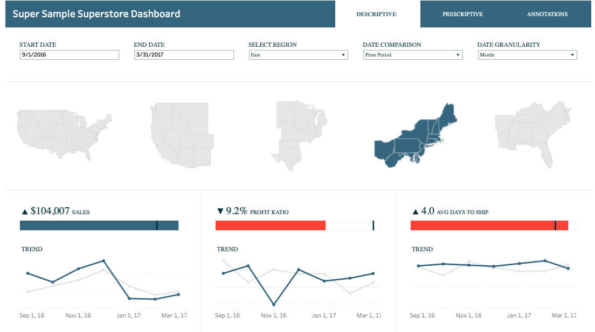

A sample of dashboard created in Tableu as well as report and visualisations in Excel.

Magna feugiat lorem
Adipiscing a commodo ante nunc magna lorem et interdum mi ante nunc lobortis non amet vis sed volutpat et nascetur.
Magna feugiat lorem
Adipiscing a commodo ante nunc magna lorem et interdum mi ante nunc lobortis non amet vis sed volutpat et nascetur.

Magna feugiat lorem
Adipiscing a commodo ante nunc magna lorem et interdum mi ante nunc lobortis non amet vis sed volutpat et nascetur.
A sample of projects of raw data collection.
Twitter Posts
View all the post about a specific topic or from a given target for better insights. Save the data in csv or any other format for future refernce or insight
retrival.
Indeed Jobs
Get all the job posts from indeed or other job portals that meet your specified criteria. A faster way to browse jobs that may interest you and put
you ahead of the crowd.

Customer Reviews
Retrieve all reviews on a certain product or service be it from amazon or any other platform. Have a clear understanding of the data and insights with
further data analysis for better business decisions.